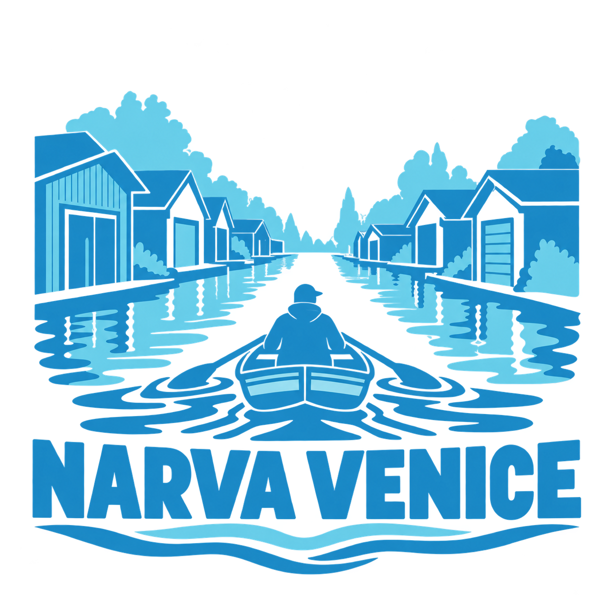

Галерея
197 фотографийЛица, берега и моменты.
Нарвская Венеция глазами своих.
Свежая подборка · 4 октября 2026
Кулгу сегодня
Канал, гаражи и места, которые создают характер Нарвской Венеции.

НарвскаяЛица, берега и моменты.
Нарвская Венеция глазами своих.
Канал, гаражи и места, которые создают характер Нарвской Венеции.